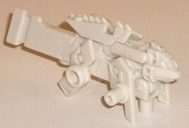
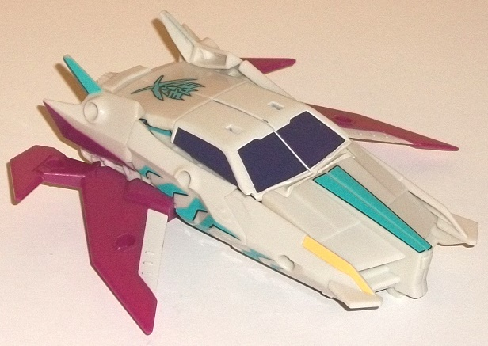
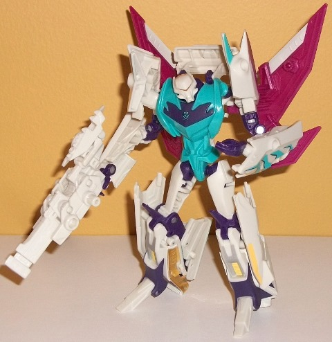

Pillage

Allegiance
: Star Seeker
Size
: Mini-Con
Difficulty of Transformation
: Very
Easy
Color Scheme:
Off-white and some
clear plastic
Individual Rating
: 4.0
Like all BotCon toys,
Pillage is a redeco, but of a mold previously released only in Japan--
Arms Micron Igu. Still, for the purposes of this review, this is a new
mold, so I'll be reviewing it as one.
In weapon mode (see
the pic of the Pirate Clone's robot mode below), Pillage is a weapon designed
to look (mostly) like the guns that the Vehicons' lower arms convert into
in the
Prime
cartoon. By and large, this mode is pretty accurate,
with a long triangular barrel, and a few "circuitry" details in the mold.
The extras from the beast mode are somewhat obvious, from the spiked top
of the gun to the little extra bits on the sides that form the beast legs,
but they're minor regardless-- the little side legs don't dramatically
change the overall look of the gun, and the spiked top actually helps enhance
the silhouette, if you ask me. There are TONS of connection points for
Pillage-- he has a standard flip-out plug on the bottom for someone to
hold him, but he's also got two plugs on the rear sides of the gun, as
well as two standard port holes at about the middle sides of the gun, as
well as two more holes on the bottom side of the gun and one even used
as the very mouth of the gun, so you can plug Pillage into a lot of places.
Sadly, with the exception of a blank clear plastic circle that's supposed
to house his allegiance symbol (but doesn't), Pillage is ENTIRELY off-white.
No paint apps at all, and as such, he looks VERY bland and dull. Apparently
there was a sticker set that was planned to come with him, but didn't get
made for whatever reason, which is a real shame.
Pillage's transformation
is incredibly simple-- you just fold down the little legs from the sides
and then fold the spiky back piece down into the actual back of the toy,
and there you go, Pillage's beast mode, which is a... fox or wolf or some
sort? Something canine, that's for sure. His face has some interesting
mold details, like a single round optic on his head and a long snout, not
unlike a "cuter" version of Movie Ravage's face. The spikes on the back
help this look, as well. However, the legs are a bit too short, and Pillage
is back-end-heavy, to the point where it's easy for his long gun-barrel-tail
to fall downwards a bit because of its weight. The tail itself is a bit
ridiculously large-- I wish there had been some simplistic way of shortening
it. Still, as a little extra mode for a partner Minicon that's meant to
be simple, it does its job okay, I guess.
Dread
Pirate Clone (Wingspan-type)


Allegiance
: Star Seeker
Size
: Deluxe (comes in a 2-pack
with
Dread Pirate Clone [Pounce-type]
)
Difficulty of Transformation
: Medium
Color Scheme
: Off-white, teal, swirly
semi-metallic fuchsia, and some dark purple, black, transparent pale yellow,
silver, and yellow
Individual Rating
: 9.7
(NOTE: Because this is a repaint, this is not a full-blown review. This mainly covers any changes made to the mold and the color scheme, and merely compares it to the Prime "Robots in Disguise" deluxe Vehicon. For a review on the mold itself, read the review of the Prime "Robots in Disguise" deluxe Vehicon figure here .)
The "Wingspan-Type" Dread
Pirate Clone is based off of the original deluxe Vehicon mold, but has
the same mold changes made to the previously Japanese-only release Arms
Micron Jet Vehicon-- i.e., the "jet variant" Vehicons you often see in
the
Prime
TV show. Before I get to the colors, it'd probably be
best to review the changes made to the core mold, pretty much all of which
have been made to the vehicle mode. Most obviously, you've got added wings
on the sides, with four standard port holes on the top (one on each wing),
two additional port holes on the bottom of the rear wings, and two standard
plugs on the underside of the main wings. There's also three port holes
on each side of the mode-- one near the front, one at the middle, and one
near the back. The rear fender piece has also been remolded to accomodate
an additional port hole. Thus, this version of the mold has a TON more
mounting points for various weapons or Mini-Cons compared to the car Vehicon
mold. The sides of the vehicle mode have also been remolded, with the wheels
removed and a more angular look given to the sides, to make the toy more
jet-esque, complete with a few minor circuitry details near the middle
sides and some spikes near the back end (the rear spoiler has been eliminated
from this version of the mold). The front hood section has also been changed,
with a more clear "bump" near the center that comes to the center, with
grill-like details in between the center bump and the side sections. All
that really changed with the transformation is that you have to fold the
wings back and up, where they stick behind the robot mode-- though since
these are plainly wings and on the show model, I don't know if I'd call
them kibble. Nothing is changed about the robot mode parts specifically--
the look has just changed some because of the side effects of the changed
parts from the vehicle mode. Oh, and one more thing-- likely because of
the added extra mass of the wings, the non-transformable blaster accessory
that came with the
Prime
deluxe Vehicon mold is gone.
Just like with G1 Wingspan,
the "Wingspan-Type" Pirate Clone has a mixture of off-white and teal as
his main colors. These colors go decently together, though the teal being
a bit darker would've been appreciated, as it would've added a bit more
contrast. However, these issues are largely mitigated by the addition of
a good amount of fuchsia visible in both modes-- on the wings in particular,
but also on the rear shoulders. This darker color really helps the color
scheme to pop more, and the white stripes on the main wings also help diversify
the colors on the wings a bit more as well. This version of the Pirate
Clone has some really wicked angular teal details along the sides of the
vehicle mode, which are accentuated by a black "shadow" on each, really
making them stand out against the white quite well from a side view. In
robot mode he looks nearly the same as the "Pounce-Type" clone in terms
of color breakup. The teal is pretty much exclusively used as the plastic
color for the chest and waist. I appreciate the purple "chest window",
but I wish a bit more paint had been used here, like some silver or something
(as some silver IS used on the lower legs, but nowhere else on the figure).
The fact that the main body goes straight from teal in the front to off-white
in the back is slightly off-putting, too, especially since the "Pounce-Type"
clone doesn't have that issue, so I don't think it has do with the mold
color breakup. The dark purple helps considerably in robot mode to break
up all of the off-white, with pretty much every small piece or "connecting
point" being that color, which keeps the color scheme light/dark/light/dark
without any one area being too much of one color. The dark purple windows
in vehicle mode are also a nice touch, as well. There's also a bit of yellow
used on the "Wingspan-type" clone-- on the headlights and also on the vent
details on the lower legs. There's also some transparent pale yellow plastic
used-- not just for "light piping" for the visor (which works very well,
by the way), but surprisingly enough for the windows of the vehicle mode,
though these are entirely painted over and the yellow's really only visible
on the inside of the robot legs and during transformation. This clone also
has a large Star Seeker emblem on the rear half of the vehicle mode and
a much smaller one on the purple "chest window" in robot mode, to loudly
proclaim his allegiance.
The "Wingspan-Type" Dread Pirate Clone is the better of the two types by a hair, mostly because of the added color and silhouette-enhancement the wings give in both modes, as well as the added number of possible mounting ports and pegs for weaponry. The jagged paint apps along the side of the vehicle mode are also pretty boss. In general the "Wingspan-Type" clone has a color scheme that's faithful to the G1 Wingspan toy, but given that this is a jet and the original Wingspan was an eagle, I wouldn't pick this up as an "updated" version of Wingspan, but rather as an expendable flying foot soldier that has the general colors of the Star Seekers that also just happens to match Wingspan's color scheme. (Oh, and Pillage is a nice little guy but DULLLL.... he really needed a sticker set.)
Reviews by Beastbot